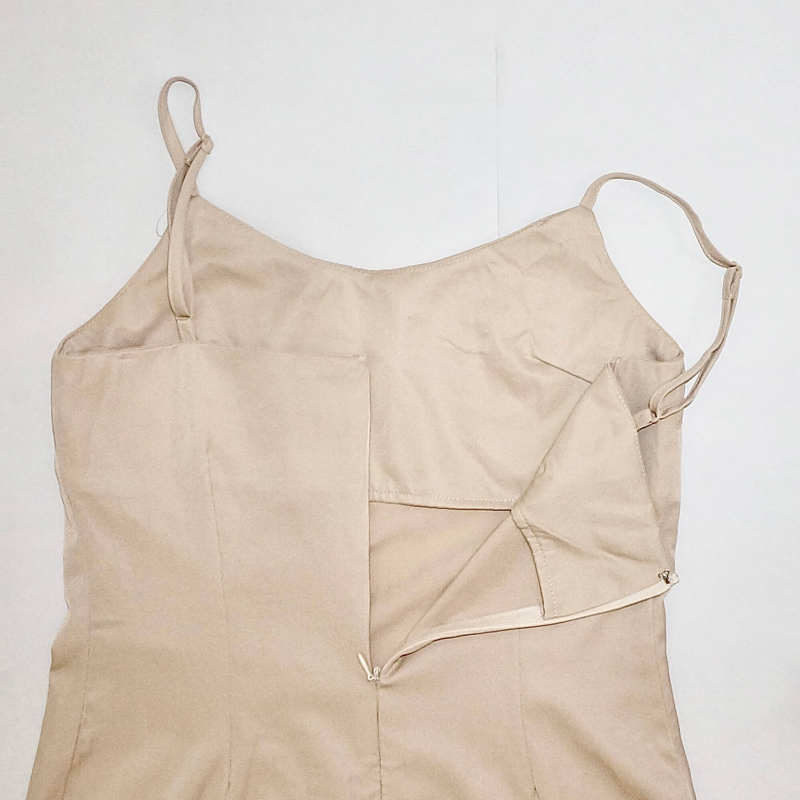
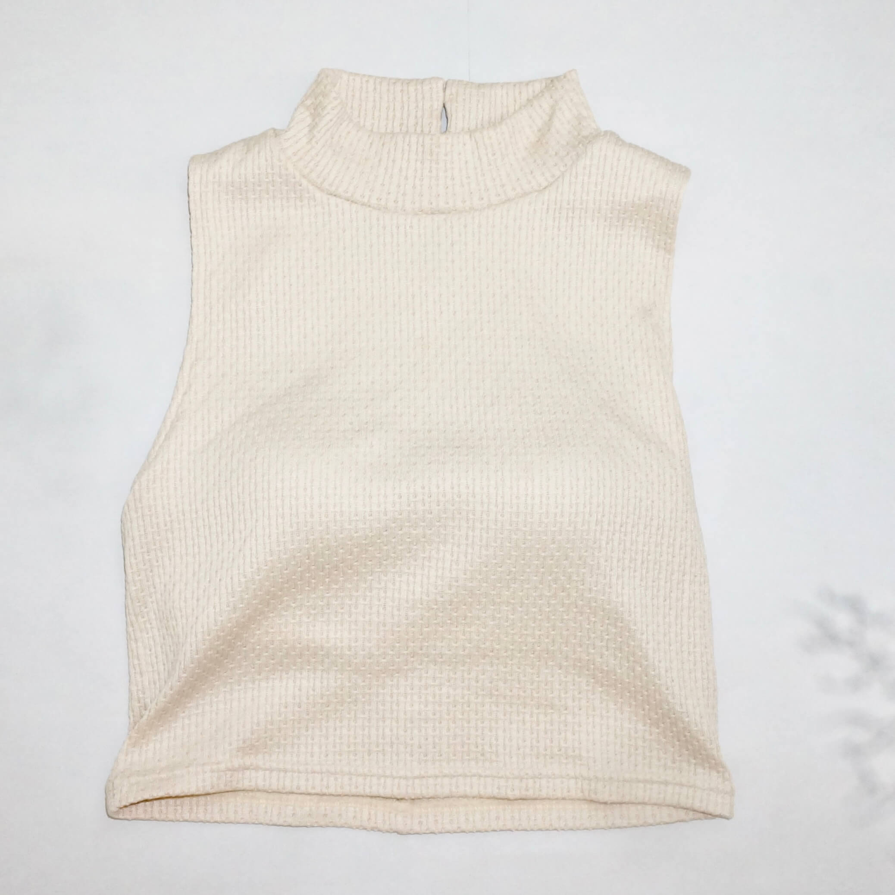
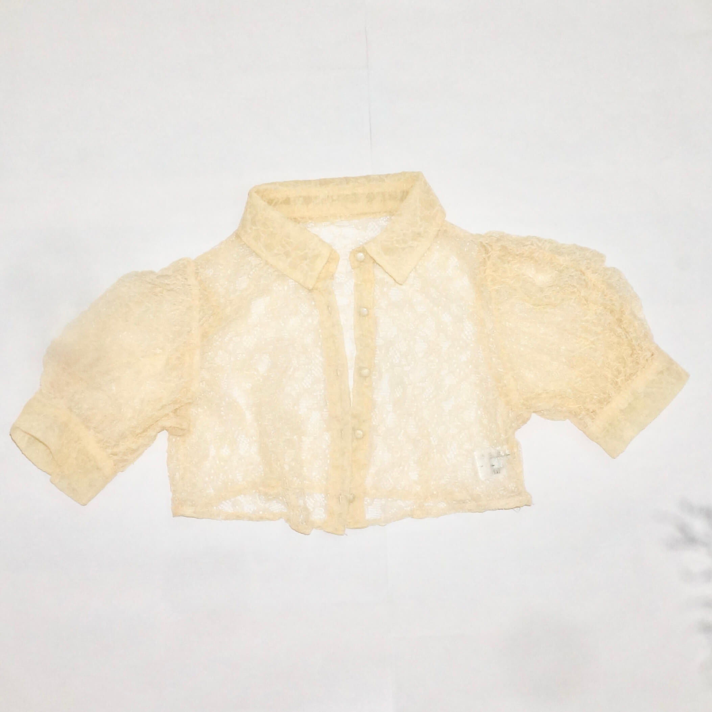
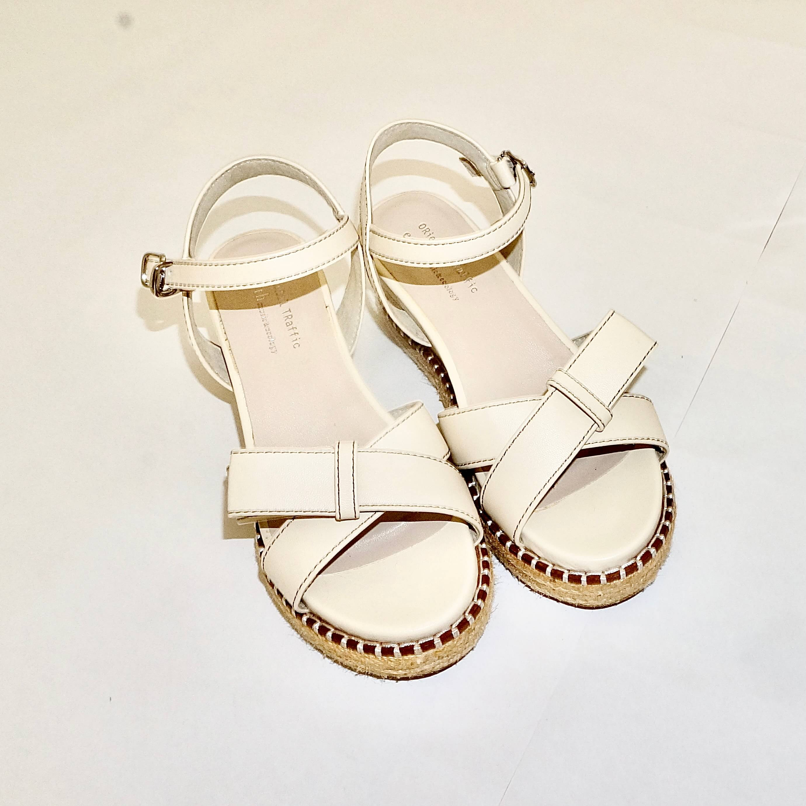

淡い薄ピンクのロングワンピース。後ろのジップとフックで着脱しやすく、シンプルながらも使いやすい一枚。

アイボリーのノースリーブ。涼しい生地感と少し長めの首元で、シンプルながら上品に着こなせる。

アイボリーの花柄レース羽織り。シンプルなコーデにさりげない華やかさをプラス。

白の女の子らしいサンダル。カジュアルなショーパンコーデにもぴったりで、夏らしい軽やかさを添える一足。

プラダの黒のミニポシェット。シンプルで洗練されたデザインがどんなコーデにもなじむ一品。実は母から譲り受けたお気に入り。